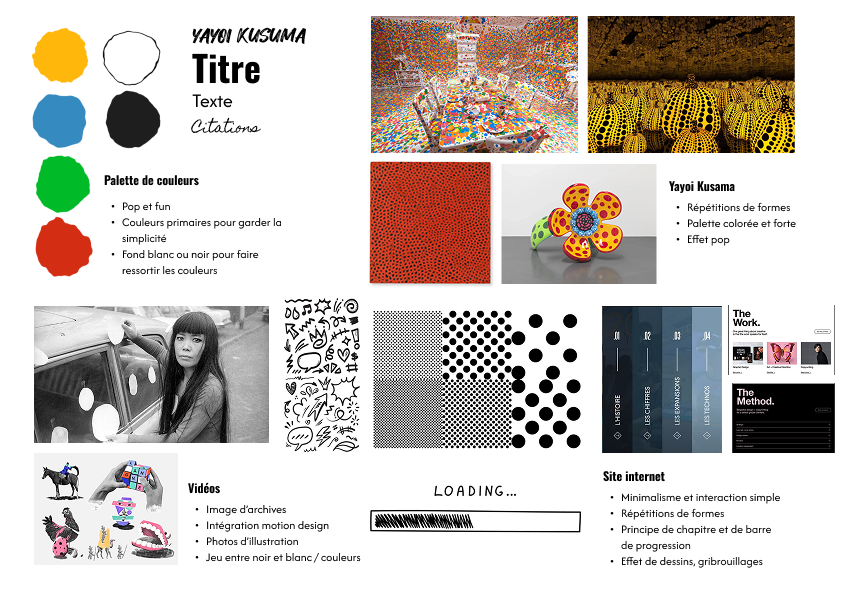
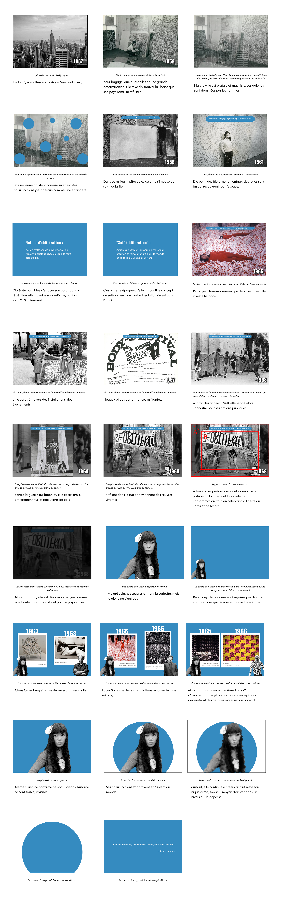

Production
Pour mener à bien ce projet conséquent, j'ai commencé par définir les grands axes de travail, et leur attribuer des détails de production. Chacun de ces jalons m'a permis de répartir mon travail sur l'année scolaire.
Direction artistique et scénarios (8 semaines de travail) :
J'ai tout de suite pris la décision de me tourner vers un style minimaliste et épuré pour mon site, dans le but de laisser la place principale aux œuvres de l'artiste. Je me suis inspirée de son utilisation de couleurs vives, et de ses obsessions pour définir ma charte graphique. Ainsi, l'utilisation de point comme connecteur tout le long de l'expérience permet de faire un rappel à sa plus grande obsession artistique.


Storyboards et maquettes (3 semaines de travail) :
Il était essentiel pour moi de produire des storyboards et une maquette du site précis, regroupant les informations des scénarios et montrant déjà une bonne base visuelle. Cette précision visuelle m’a permis de me projeter plus facilement, mais également de rendre les prochaines étapes de production plus simples.
Pour illustrer mes propos, j'ai pris l'exemple d'une des quatre vidéos réalisées.
Modélisations 3D (1 semaine de travail) :
Les modélisations 3D occupent une place centrale au cœur du projet, il était donc important de leur consacrer un temps de travail. Cela m'a permis de produire en amont, toutes les modélisations 3D qui me seront nécessaires pour la suite du projet.

Montage vidéos (4 semaines de travail) :
Il ne me manquait plus que les vidéos explicatives avant de me lancer dans le développement du site. Grâce à ma préparation en amont, j'ai pu facilement produire quatre vidéos d'environ deux minutes chacune et une vidéo 360°.
Cependant, j’ai eu quelques difficultés au niveau de l’export de la vidéo 360°, dû à un manque de ressources techniques.

Développement web (13 semaines de travail) :
La dernière partie consistait à coder le site internet, en introduisant l’ensemble des éléments produits.
J’ai rencontré quelques difficultés dues à mon manque de pratique dans ce domaine. Pour ce faire, j’ai utilisé l’IA Copilot, directement intégrée dans mon logiciel de code VScode, ce qui m’a permis d’être aidée lorsque je rencontrais des problèmes techniques.